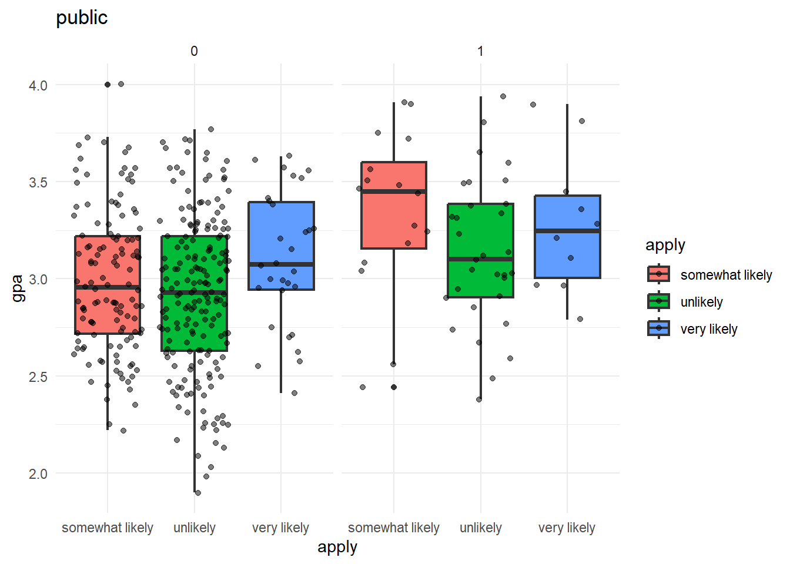
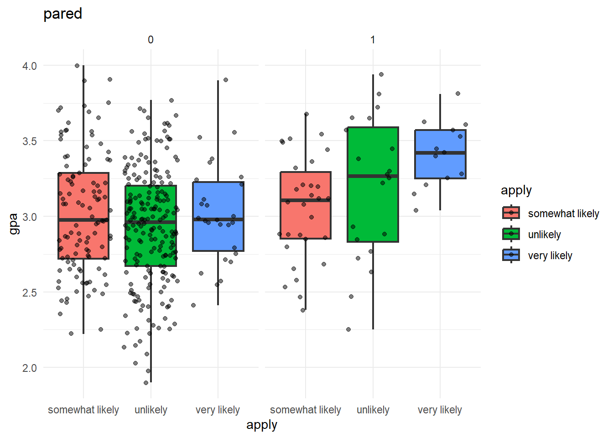
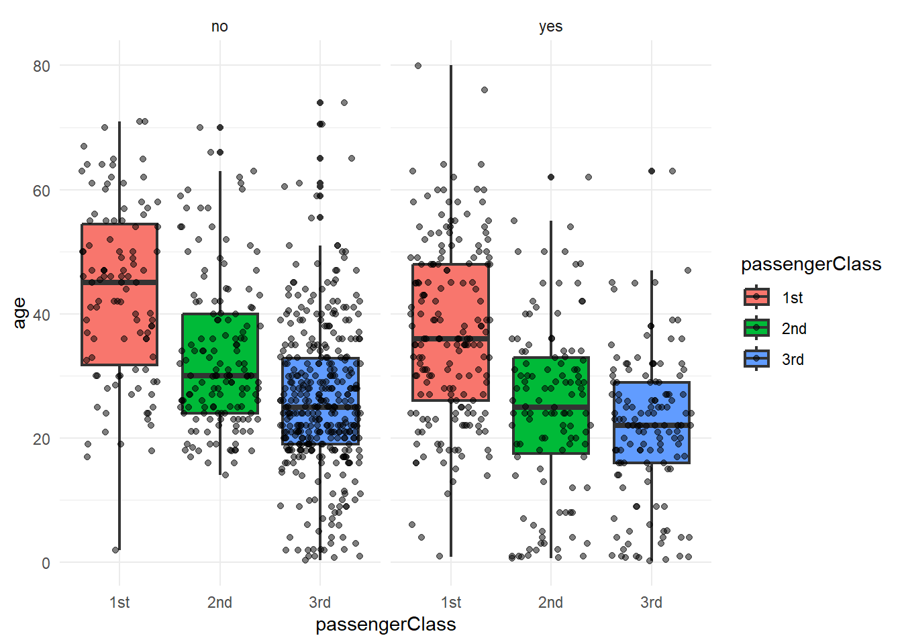

training_data <- read.csv("training_data.csv")
testing_data <- read.csv("testing_data.csv")
print(paste0("Training Data: ", nrow(training_data),
"; Testing Data: ", nrow(testing_data)))[1] "Training Data: 400; Testing Data: 100"Ordinal outcomes are common in research studies and real-world applications. These outcomes are not binary and instead fall into multiple ordered categories. It is essential to understand and model such outcomes for decision-making purposes.
To analyze and model the relationships between one or more predictor variables and an ordinal response variable, statisticians use ordinal logistic regression. This statistical model is an extension of logistic regression, which can handle the dependent variable with two or more ordered categories. On the other hand, multinomial logistic regression is an extended version of binary logistic regression. However, it does not preserve the ranking information in the dependent variable when returning the information on the contribution of each independent variable.
The difference in response scales might require different equations to model them correctly. For example, the ordered scale needs a different function than the unordered scale. In the case of the ordered scale, it is more useful to work with cumulative probabilities (McCullagh and Nelder, 1989). For instance, the cumulative probability of “agreeing” includes the probabilities of “agreeing” and “strongly agreeing” combined. However, this approach only makes sense if the order of categories is clear.
Peter McCullagh - A Northern Irish-born American statistician. Distinguished Service Professor in the Department of Statistics at the University of Chicago.
McCullagh’s motivation for the ordinal model is to develop statistical methods that even after combining levels of responses, the validity of conclusion will not be affected by the new number of responses. The amalgamation of the response categories in this way will normally reduce the available information, change the estimate, the attained significance level and so on. The important point is that the same parameter is being measured however many categories are combined (McCullagh, 1980)
Let \(Y\) denote the ordered response with \(k\) categories, with \(k \geq 3\). Then \(P(Y \leq j)\) is the cumulative probability of \(Y\) less than or equal to a specific category \(j = 1, ..., k-1\).
The model can be defined as \[log\left\{\frac{P(Y \leq j)}{P(Y > j)}\right\} = logit(P(Y \leq j)) = \beta_{j0} - \beta_{1}X_{1} - \cdots - \beta_{p}X_{p}\] where \(j = 1,...,k-1\)
Remark: If \(k = 2\), however ordered nature the dependent variable is, the model is the same as binary logistic regression.
The assumptions of the Ordinal Logistic Regression are as follow:
The data of the dependent variable must be ordinal in nature to best explain the outcome of the model.
Ordinal logistic regression works if the independent variable is only continuous, categorical, or ordinal. If there are several independent variable, the model also works if all of it are only continuous, only categorical, or only ordinal.
The frequency of each of the category of the dependent variable must not be zero. Furthermore, it is also suggested if each category has equal count since if an event of greater cell with less count occurs,, the less reliable the chi-square test will be.
The regression model also assumes that the effect of the independent variable/s is the same for all categories of the dependent variable. This assumption is called the proportional odds, parallel lines, parallel slopes, or parallel regression assumption (Borooah, 2002; Hardin & Hilbe, 2007; Long, 1997), and this will be referred as the parallel lines assumption.
Assessing model fit is the process of checking whether the model fits the data sufficiently well. The methods of assessment are the following:
In linear regression, the coefficient of determination, \(R^2\), measures the variance in the dependent variable explained by the predictors, with higher \(R^2\) values (up to a maximum of 1) indicating a better explanatory fit of the model. For regression models with categorical dependent variables, calculating a direct \(R^2\) similar to that in linear models is unfeasible. Instead, approximations of \(R^2\) are used to estimate the model’s explanatory power, adapting the concept to fit the context of categorical outcomes (IBM, 2023). For this assessment, there are three values of \(R^2\), each of which have different formulas. The following are the three different \(R^2\):
\[R^2_{\text{McF}} = 1 - \frac{\log(L_M)}{\log(L_0)}\] \[R^2_{\text{CS}} = 1 - \left(\frac{L_0}{L_M}\right)^{2/n}\] \[R^2_{\text{Nagelkerke}} = \frac{1 - \left(\frac{L_0}{L_M}\right)^{2/n}}{1 - L_0^{2/n}}\] where \(L_M\) is the fitted model, \(L_0\) is the null model, \(n\) is the sample size.
\(R^2_{\text{McF}}\) is McFadden’s version of pseudo \(R^2\), based on the log-likelihood kernels for the intercept-only model and the full estimated model (McFadden, 1974).
Cox and Snell’s \(R^2_{\text{CS}}\) is based on the log likelihood for the model compared to the log-likelihood for a baseline model (Cox and Snell 1989).
Nagelkerke’s \(R^2_{\text{Nagelkerke}}\) is an adjusted version of the Cox and Snell \(R^2\) that adjusts the scale of the statistic to cover the full range from 0 to 1 (Nagelkerke, 1991).
The category of the the values of \(R^2\) can be summarized as follows:
The likelihood ratio test compares the likelihoods of these two models to determine whether the additional parameters in the full model significantly improve the fit compared to the reduced model. The null hypothesis of the test is the simpler model (reduced model) is sufficient to explain the data. There is no significant improvement in model fit when adding extra parameters. The alternative hypothesis is the more complex model (full model) provides a significantly better fit to the data than the simpler model. This test is calculated as the ratio of the likelihood of the full model to the likelihood of the reduced model. Mathematically, it is represented as: \[LR = -2 * (\text{log likelihood of reduced model} - \text{log likelihood of full model})\]
The Lipsitz test checks if your model fits the real data well. In other words, it sees if the predictions your model makes is the same about the actual data. The test compares what your model predicts (expected probabilities) with what actually occurs (observed frequencies). If your model is good, the predictions and actual outcomes should be pretty close. The null hypothesis of this test is that the frequencies of the ordinal response variable are consistent with the expected frequencies predicted by the model (Lipsitz, et al., 1996).
Accuracy is one metric for evaluating classification models. It is the measurement used to determine which model is best at identifying relationships and patterns between variables in a dataset. Accuracy follows the definition:
\[\text{Accuracy} = \frac{\text{Number of correct predictions}}{\text{Total number of predictions}}\]
Where the number of correct predictions, as the name implies, are the accurate predicted values by the model, and the total number of predictions are the total observations in the validation set.
Sensitivity is the metric that evaluates a model’s ability to predict true positives of each available category. Specificity is the metric that evaluates a model’s ability to predict true negatives of each available category (Mitrani, A., 2019). The equations below are for calculating sensitivity and specificity:
\[\text{Sensitivity} = \frac{\text{True Positives}}{\text{True Positives + False Negatives}}\]
\[\text{Specificity} = \frac{\text{True Negatives}}{\text{True Negatives + False Positives}}\]
Where true positives are the number of observations the model predicted were positive that were actually positive. While false negatives are the number of observations the model predicted were positive that were actually negative. Moreover, false negatives, are the number of observations the model predicted were negative that were actually positive. Lastly, true negatives are the number of observations the model predicted were negative that were actually negative.
Bootstrapping is a statistical technique used to estimate the sampling distribution of an estimator by resampling with replacement from the original data. This is often used when the theoretical distribution of an estimator is complex or unknown. This method involves repeatedly drawing samples, typically thousands of times, from the data set and calculating the statistic of interest for each sample. The bootstrap method allows for the estimation of standard errors, confidence intervals, and significance tests, which are critical in many statistical analyses (Efron and Tibshirani, 1994).
Bootstrapping does not rely on the assumptions of normality and can be applied to complex, skewed, or small datasets where other methods might fail or provide biased estimates (Davison and Hinkley, 1997). It offers a straightforward way to derive robust estimates of standard errors and confidence intervals for complex estimators or models without needing explicit formulas.
A study looks at factors that influence the decision of whether to apply to graduate school. College juniors are asked if they are unlikely, somewhat likely, or very likely to apply to graduate school. Data on parental educational, a binary variable indicating if at least one parent has attended graduate school and whether the undergraduate institution is public or private, and the current GPA of the student is also collected. The researchers have reason to believe that the “distances” between these three points are not equal. For example, the “distance” between “unlikely” and “somewhat likely” may be shorter than the distance between “somewhat likely” and “very likely”.
Feature Description
apply (Dependent Variable) - The apply variable is an ordered categorical variable with responses to a survey about whether a student feels they are “Unlikely” (1), “Somewhat likely” (2), or “Very likely” (3) to apply to graduate school.
parental education status variable or pared - The pared variable is a binary variable indicating if at least one parent has attended graduate school. 1 - at least one parent has a graduate degree; 0 otherwise
public - The public variable is a binary variable indicating if the undergraduate institution is public (as opposed to private); 1- public; 0-private
gpa - gpa variable is the student’s grade point average (1-4)
Goal
To quantitatively assess the influence of various factors on the likelihood that a student will decide to apply to graduate school(moving from being “unlikely” to “somewhat likely,” or from “somewhat likely” to “very likely”).
Partitioning
The data is split into partition with \(80\%\) falls in the training data, while the remaining \(20\%\) is for the testing data. This partitioning approach ensures that the model is trained on a substantial portion of the data. This allows it to learn the underlying patterns of the data effectively. Meanwhile, the testing data provides an unbiased assessment of the model’s performance on unseen data.
Descriptive statistics provides basic information about the features of the data. In this way, it offers a clear overview of the data distribution and central tendencies. This analysis is crucial for identifying trends, spotting anomalies, and laying the groundwork for statistical examinations.
apply pared public gpa
0 0 0 0 The code snippet above sums the number of missing values in each of the variables. The result obtained shows that there are no missing values in any of the four variables. Therefore, there is no need to take any further steps to handle any missing data. Next, the distribution of categorical variables will be examined to determine if there is any imbalance present.
$apply
somewhat likely unlikely very likely
140 220 40
$pared
0 1
337 63
$public
0 1
343 57 The concept of the code above counts the number of categories in each of the variables. In the apply variable, the unlikely holds the majority of the counts. Furthermore, the distribution of the frequency suggests that they are not equal or approximately equal. A possible consequence of this is that when modeling, the fitted model may not perform well in prediction. For the pared and public variables, there is an imbalance in the values, the majority of the counts are zero. Again, a possible consequence of this phenomenon is that the model may not perform well in forecasting.
pared 0 1
public apply
0 somewhat likely 98 26
unlikely 175 14
very likely 20 10
1 somewhat likely 12 4
unlikely 25 6
very likely 7 3It shows the frequency counts of respondents classified by their likelihood of applying—categorized as “somewhat likely,” “unlikely,” and “very likely”—across combinations of two binary conditions: public (0 or 1) and pared (0 or 1). For instance, under the public = 0 category, 98 respondents are “somewhat likely” to apply when pared is 0, and 26 are “somewhat likely” when pared is 1. The table indicates that the majority of respondents, especially when public is 0, are “unlikely” to apply. It is also noticeable that there is unequal in the frequency in the different categories of apply variable. This phenomenon can significantly impact the accuracy and performance of the model. If certain categories are dominant over the others, it could skew the model’s ability to accurately estimate relationships between less frequent categories. Furthermore, it may not provide enough data to accurately estimate the model.
Checking outliers in regression analysis is crucial as the presence of it may affect the performance of the model. One of the ways for checking the presence of the event is by performing boxplots.


The boxplots above compares the distributions og gpa based on public and pared variables. From the two boxplots, there is existence of outliers in the data points, this is represented as the points that deviate outside the whiskers. However, there are only small portion of it, hence, the modeling can proceed at ease. While at it, we might as well explain the distribution of the boxplots. The distribution of gpa does not show dramatic differences between the categories within each condition (0 and 1). However, for condition 1—public—students who are “very likely” to apply seem to have a slightly higher median GPA compared to the other categories. For the pared, the distribution of gpa are somewhat consistent across categories, but there is a noticeable shift in medians. For condition 0, students who are “unlikely” to apply tend to have lower GPA medians. For condition 1, students who are “very likely” to apply have noticeably higher GPA.
The nature of the data now is transformed into factor to be fitted by ordinal logistic regressions. The code snippet below simply do the virtue of transformation.
training_data$apply <- ifelse(training_data$apply == "unlikely", 1,
ifelse(training_data$apply == "somewhat likely", 2, 3))
training_data$apply <- as.factor(training_data$apply)
training_data$pared <- as.factor(training_data$pared)
training_data$public <- as.factor(training_data$public)
str(training_data)'data.frame': 400 obs. of 4 variables:
$ apply : Factor w/ 3 levels "1","2","3": 3 2 1 2 2 1 2 2 1 2 ...
$ pared : Factor w/ 2 levels "0","1": 1 2 2 1 1 1 1 1 1 2 ...
$ public: Factor w/ 2 levels "0","1": 1 1 2 1 1 2 1 1 1 1 ...
$ gpa : num 3.26 3.21 3.94 2.81 2.53 ...In the descriptive statistics performed earlier, it is evident that the nature of the dependent variable is ordinal and has three categories in fact(Unlikely, Somewhat Likely, Very likely). The independent variables also are continuous (gpa), categorical(pared and public). There is no zero count phenomenon in each of the category of the dependent variable.
Checking the Presence of Multicollinearity
No multicollinearity appeared since the data only have one continuous independent variable. Notice that, there is a clear image of disproportions in the frequency of pared and public.
Checking Parallel Regression Lines
The assumption parallel regression lines can be checked using Brant’s test. It is a parallel lines assumption at which the effect of the independent variable is the same for all categories of the dependent variable (Arfan and Sherwani, 2017, p.212). In other words, parallel lines assumption means that the correlation between dependent and independent variable does not change for the categories of dependent variable, and thus, to test the unchangeability of the parameter estimates at cut-off points (Arı and Yıldız, 2014, p.10).
If violated, we can still perform the model but be cautious in interpreting the results because the estimated coefficients may not fully capture the relationship between the predictor variables and the ordinal response variable if the assumption of parallel regression lines is violated.
The null hypothesis of the test is that the parallel regression assumption holds, while the alternative is it does not hold. The said test can be done in R using the brant() function in package. To perform the test, it requires to fit an ordinal logistic regression model first using the polr() function.
# Modeling
prop.odds <- polr(apply ~ pared + public + gpa, data = training_data)
# Brant's Test
brant(prop.odds)--------------------------------------------
Test for X2 df probability
--------------------------------------------
Omnibus 4.34 3 0.23
pared1 0.13 1 0.72
public1 3.44 1 0.06
gpa 0.18 1 0.67
--------------------------------------------
H0: Parallel Regression Assumption holdsThe output of the brant() function contains four columns, particularly, test for the variable, the \(\chi^2\), the df, and the probability or the p-value. Notice that, there are only three independent variables, but an additional variable appeared in the output, the Omnibus. The Omnibus variable is the global assessment of the assumption. The p-values for all variables are greater than 0.05, hence, the proportional odds assumption holds
Now, the checking of assumptions is done, and none are violated, albeit there is the presence of an imbalance in the frequencies of the categorical variables. Nevertheless, the next thing to perform is to proceed with the modeling part of the ordinal logistic regression in the following subsection.
To model ordinal logistic regression in R, the function polr() does the honors as mentioned earlier. However, this time, the Hess parameter is added and set to TRUE to perform the Hessian matrix in the model. The Hessian matrix, also known as the Hessian or the Hessian matrix of second partial derivatives, is a square matrix of second-order partial derivatives of a scalar-valued function. In the context of logistic regression, the Hessian matrix is used to calculate standard errors, test statistics, and confidence intervals for the estimated coefficients (parameters) of the model.
Call:
polr(formula = apply ~ pared + public + gpa, data = training_data,
Hess = TRUE)
Coefficients:
Value Std. Error t value
pared1 1.04769 0.2658 3.9418
public1 -0.05879 0.2979 -0.1974
gpa 0.61594 0.2606 2.3632
Intercepts:
Value Std. Error t value
1|2 2.2039 0.7795 2.8272
2|3 4.2994 0.8043 5.3453
Residual Deviance: 717.0249
AIC: 727.0249 After checking the summary of the model using the summary() function, it provides the coefficients, intercepts, residual deviance, and AIC. Notice that in the coefficient and intercepts part, there is no p-value of the output. This is hard to interpret as we cannot determine which of which is statistically significant. Hence, before interpreting, the calculation of the p-value ought to be performed first. The codes below do the virtue of performing what is needed.
coefs <- coef(summary(fit))
# Calculate P-value
p <- pnorm(abs(coefs[, "t value"]), lower.tail = FALSE) * 2
# Add Column
coefs <- cbind(coefs, "p value" = p)
knitr::kable(round(coefs, 4), caption = "Coefficients and Intercepts")| Value | Std. Error | t value | p value | |
|---|---|---|---|---|
| pared1 | 1.0477 | 0.2658 | 3.9418 | 0.0001 |
| public1 | -0.0588 | 0.2979 | -0.1974 | 0.8435 |
| gpa | 0.6159 | 0.2606 | 2.3632 | 0.0181 |
| 1|2 | 2.2039 | 0.7795 | 2.8272 | 0.0047 |
| 2|3 | 4.2994 | 0.8043 | 5.3453 | 0.0000 |
Now, from the table above, the estimated model can be written as:
\[logit(\hat{P}(Y \leq 1) = 2.20 - 1.05*\textbf{pared} - (-0.6)*\textbf{public} - 0.62*\textbf{gpa}\] \[logit(\hat{P}(Y \leq 2) = 4.30 - 1.05*\textbf{pared} - (-0.6)*\textbf{public} - 0.62*\textbf{gpa}\]
Interpretation
The last two rows in the coefficients and intercepts table are the intercepts, or cutpoints, of the Ordinal Logistic Regression. These cutpoints indicate where the latent variable is cut to make the three groups that are observed in the data. The public1 is the only variable that is not statistically significant since its p-value is greater than \(0.05\). The rest of the independent variable, and the intercepts are significant at the arbitrary \(0.05\) alpha value.
Coefficients:
pared (Parental Education Status): Holding all other variables constant, if a student’s parent has attended graduate school (pared = 1) rather than not (pared = 0), the log-odds of the student being in a higher category (e.g., from “Unlikely” to “Somewhat likely”, or from “Somewhat likely” to “Very likely”) of applying to graduate school increase by approximately 1.05 units. Students whose parents have higher educational attainments are more likely to pursue and succeed in higher education themselves. This phenomenon is often attributed to the social and cultural capital that educated parents pass on to their children, which influences their educational aspirations and achievements (Perna and Titus, 2005).
public (Institution Type): Holding all other variables constant, there is no statistically significant effect of whether the undergraduate institution is public (public = 1) or private (public = 0) on the log-odds of a student being in a higher category of likelihood to apply to graduate school. Research by Bowen and Bok (1998) in their book “The Shape of the River” highlights that the type of undergraduate institution (public vs. private) does not significantly impact the subsequent success in graduate education, suggesting that factors like individual achievement and socioeconomic status might play more significant roles.
gpa: Holding all other variables constant, for every one-unit increase in GPA, the log-odds of a student being in a higher category of likelihood to apply to graduate school increase by approximately 0.62 units. A study by Ethington and Smart (1986) indicates that GPA is a strong predictor of graduate school enrollment, reflecting academic preparedness and motivation, which are critical in higher education pursuits.
Intercepts:
Transition from “Unlikely” to “Somewhat likely”: Holding all other variables constant, the log-odds of a student transitioning from feeling “Unlikely” to “Somewhat likely” to apply to graduate school increase by approximately 2.20 units. This is supported by Tinto’s Theory of Student Departure (1993) which can provide a basis for understanding how certain thresholds or transitions in educational decision-making are influenced by previous educational experiences and integration within the academic system.
Transition from “Somewhat likely” to “Very likely”: Holding all other variables constant, the log-odds of a student transitioning from feeling “Somewhat likely” to “Very likely” to apply to graduate school increase by approximately 4.30 units. According to Astin’s Theory of Involvement (1984), it argues that the degree of student involvement in academic and extracurricular activities significantly influences their commitment to educational goals, such as applying to graduate school.
Confidence Interval
ci <- confint(fit, level = 0.95)
knitr::kable(cbind(logit = coef(fit), ci),
caption = "Condidence Interval of Logit")| logit | 2.5 % | 97.5 % | |
|---|---|---|---|
| pared1 | 1.0476901 | 0.5281768 | 1.5721750 |
| public1 | -0.0587857 | -0.6522060 | 0.5191384 |
| gpa | 0.6159406 | 0.1076202 | 1.1309148 |
When interpreting the confidence interval of the logit values, if 0 is included in the interval, it implies that the effect of the predictor variables on the outcome is not statistically significant. The true log odds could be negative, positive, or effectively zero, suggesting no effect.
Table 3 shows the logit estimates and their corresponding \(95\%\) confidence intervals for three predictors in a logistic regression model: pared1, public1, and gpa. The logit estimate for pared1 is \(1.0477\) indicating a positive effect on the oucome, with a confidence interval not including zero implying it is statistically significant. Conversely, public1 has a logit estimate of \(-0.0588\) with a confidence interval that includes zero, suggesting that this predictor does not have a statistically significant impact on the outcome. Finally, gpa shows a positive logit of \(0.6159\) with a confidence interval from \(0.1076\) to \(1.1309\), also indicating a significant positive effect on the outcome, as the interval does not include zero.
For easier comprehension, it is recommended to convert the log of odds into odds ratio. This can be done by taking the exponential to the log odds value. While at it, the \(95\%\) confidence interval is calculated for each coefficient.
If the confidence interval for the odds ratio includes the number 1 then the calculated odds ratio would not be considered statistically significant. This can be seen from the interpretation of the odds ratio. An odds ratio of less than 1 indicates that the odds of the outcome occurring are lower with the presence or increase of the predictor variable. Conversely, an odds ratio greater than 1 suggests that the odds of the outcome occurring are higher with the presence or increase of the predictor variable. An odds ratio of exactly 1 implies that the predictor variable has no effect on the odds of the outcome; in other words, the odds are the same regardless of the presence or level of the predictor variable. Therefore, when the confidence interval for an odds ratio includes the 1, it indicates uncertainty about whether the predictor variable positively or negatively affects the odds of the outcome occurring. This means the true population odds ratio might be greater than, less than, or exactly 1 (Tenny and Hoffman, 2023).
| OR | 2.5 % | 97.5 % | |
|---|---|---|---|
| pared1 | 2.8510579 | 1.6958376 | 4.817114 |
| public1 | 0.9429088 | 0.5208954 | 1.680579 |
| gpa | 1.8513972 | 1.1136247 | 3.098490 |
pared1: For students whose parents did attend college, the odds of being more likely (i.e., very or somewhat likely versus unlikely) to apply is 2.85 times—185% increase— that of students whose parents did not go to college, holding constant all other variables.
public: There is no statistically significant difference in the odds of a student being in a higher category of likelihood to apply to graduate school between public and private undergraduate institutions. The odds ratio of 0.94 suggests that the odds are slightly lower for students from public institutions, but the 95% CI includes 1, indicating that the difference is not statistically significant.
gpa: For every one unit increase in student’s GPA the odds of being more likely to apply (very or somewhat likely versus unlikely) is multiplied 1.85 times (i.e., increases 85%), holding constant all other variables.
Having established the parameters of our regression models, we now proceed to assess their fit and robustness. This next section evaluates how well the models conform to the observed data, using a variety of diagnostic statistics and tests to ensure the reliability and validity of our findings.
This section contains a discussion on assessing the model using the different metrics discussed in the model evaluation and diagnostic section. The first metric to perform is the pseudo R-squared. To do it, we must remodel again the ordinal logistic regression using the clm() function as the respective functions of the other metrics do not work in polr().
Pseudo R-Squared
There are three different pseudo R-squared utilized in this study, McFadden, Cox and Snell, and Nagelkerke’s pseudo R-squared. It is time-consuming to calculate each using different functions luckily, the nagelkerke() function performs the three.
| Pseudo.R.squared | |
|---|---|
| McFadden | 0.0326231 |
| Cox and Snell (ML) | 0.0586601 |
| Nagelkerke (Cragg and Uhler) | 0.0695655 |
Table 5 displays three pseudo \(R^2\) values for a logistic regression model: McFadden’s at 0.0326, Cox and Snell’s at 0.05867, and Nagelkerke’s at 0.0695. These metrics assess the goodness of fit of the model, with each indicating a relatively low explanatory power: McFadden’s value suggests that the independent variables explain approximately 3.26% of the variance in the dependent variable. Cox and Snell’s and Nagelkerke’s values are slightly higher, indicating slightly better but still modest explanatory power. Nagelkerke’s value, the highest, suggests that the model explains about 6.96% of the variance.
Likelihood Ratio Test
| Df.diff | LogLik.diff | Chisq | p.value | |
|---|---|---|---|---|
| -3 | -12.09 | 24.18 | 2.29e-05 |
Table 6 shows the results of a LRT. The test compares two nested models, with the difference in degrees of freedom (Df.diff) being \(-3\), indicating that the full model has three additional parameters compared to the reduced model. The LogLik.diff of \(-12.09\) is the difference in the log-likelihoods between the two models, where the full model has a lower log-likelihood. Despite this, the Chi-square value of 24.18 and the very small p-value suggesting that the addition of these three parameters significantly improves the model fit. Therefore, the null hypothesis is rejected which means that adding the predictors is better than the null model with no predictors.
Lipsitz Test
Lipsitz goodness of fit test for ordinal response models
data: formula: apply ~ pared + public + gpa
LR statistic = 8.5407, df = 9, p-value = 0.4807Since the p-value is greater than \(0.05\), we do not reject the null hypothesis. The model is adequately fitting the ordinal data. The predictions of the model are the same or closely the same as the actual data
Accuracy
testing_data <- read.csv("testing_data.csv")
testing_data$apply <- ifelse(testing_data$apply == "unlikely", 1,
ifelse(testing_data$apply == "somewhat likely", 2, 3))
testing_data$apply <- as.factor(testing_data$apply)
testing_data$pared <- as.factor(testing_data$pared)
testing_data$public <- as.factor(testing_data$public)
predicted_data <- predict(fit, testing_data, type = "class")
confusionMatrix(testing_data$apply, predicted_data)The table presented below is only a portion of the output in the confusionMatrix() function. The full output will be presented in the appendix.
| Reference | Accuracy | Sensitivity | Specificity | |||||||
|---|---|---|---|---|---|---|---|---|---|---|
| Prediction | 1 | 2 | 3 | C1 | C2 | C3 | C1 | C2 | C3 | |
| 1 | 48 | 4 | 0 | |||||||
| 2 | 28 | 11 | 0 | 0.59 | 0.58 | 0.65 | NA | 0.76 | 0.66 | 0.91 |
| 3 | 7 | 2 | 0 | |||||||
Confusion Matrix
The model predicted 48 out of 52 actual Class 1 instances correctly, misclassifying 4 as Class 2 and 0 as Class 3. Out of 39 actual Class 2 instances, 11 were correctly predicted, but 28 were incorrectly classified as Class 1, showing a high misclassification rate for Somewhat likely. There were 9 actual Class 3 instances; 2 were correctly predicted, while 7 were misclassified as Class 1, indicating difficulty in correctly classifying this class.
Accuracy
The overall accuracy of the model is 0.59, indicating that 59% of all predictions made by the model are correct. This suggests moderate predictive power.
Sensitivity
About 58% of actual Class 1 instances were identified correctly, suggesting moderate sensitivity for this class. The model correctly identified about 65% of actual Class 2 instances, showing slightly better sensitivity for this class. Not available (NA), likely due to the small number of Class 3 instances present, making it difficult to compute a reliable sensitivity measure.
Specificity
Approximately 76% of instances not belonging to Class 1 were correctly identified, indicating good specificity. About 66% of non-Class 2 instances were correctly identified, showing moderate specificity. The model was very effective in identifying non-Class 3 instances, with a specificity of 91%, suggesting that while it struggles to identify Class 3 correctly, it rarely misclassifies other classes as Class 3.
Now that the diagnostics for the model are complete, the next step is to remodel the data by removing any non-statistically significant variables. This will help determine if there is an improvement in the model fit. The subsequent section will provide a discussion comparing the differences in coefficients, intercepts, inferences, and model diagnostics.
This section contains the remodeled version of the first example with the independent variable removed, the public variable since it is not statistically significant. Furthermore, the same flow is performed—modeling, inference, and assessment of model fit. The full output from R is shown in the Appendix. There will be a selection of which model is best by checking and comparing the value of the remodeled version and the original model in terms of the coefficients, intercepts, inference, and metrics utilized in assessing the model. The Residual Deviance and AIC will also be added to the criteria for choosing which of the two models is better.
| Original | Remodeled | ||||||||
|---|---|---|---|---|---|---|---|---|---|
| Value | Std. Error | t value | p value | Value | Std. Error | t value | p value | ||
| pared1 | 1.0477 | 0.2658 | 3.9418 | 0.0001 | 1.0457 | 0.2658 | 3.9418 | 0.0001 | |
| public1 | -0.0588 | 0.2979 | -0.1974 | 0.8435 | - | - | - | - | |
| gpa | 0.6159 | 0.2606 | 2.3632 | 0.0181 | 0.6042 | 0.2539 | 2.3794 | 0.0173 | |
| 1|2 | 2.2039 | 0.7795 | 2.8272 | 0.0047 | 2.1763 | 0.7671 | 2.8370 | 0.0046 | |
| 2|3 | 4.2994 | 0.8043 | 5.3453 | 0.0000 | 4.2716 | 0.7922 | 5.3924 | 0.0000 | |
Table 8 displays a comparison of coefficients and intercepts between the original and the remodeled(where the non-significant variable public1 was removed). In the remodeled version, there is a slight decrease in the coefficients for pared1 and gpa, but both maintaining statistical significance with minor adjustments in their standard errors and p-values. The intercepts for the ordinal thresholds 1|2 and 2|3 also slightly decrease but continue to show significances. The removal of public1 seems to be improving the model fit.
Confidence Interval
| Original | Remodeled | ||||||
|---|---|---|---|---|---|---|---|
| logit | 2.5 % | 97.5 % | logit | 2.5 % | 97.5 % | ||
| pared1 | 1.0477 | 0.5282 | 1.5722 | 1.0457 | 0.5265 | 1.570 | |
| public1 | -0.0588 | -0.6522 | 0.5191 | - | - | - | |
| gpa | 0.6159 | 0.1076 | 1.1309 | 0.6042 | 0.1090 | 1.106 | |
The log odds of pared1 remain almost unchanged. The same can be said for its confidence interval. The coefficient for gpa also shows a slight adjustment. The comparison of the two models, albeit with slight changes in the values, is maintaining its significant impact.
| Original | Remodeled | ||||||
|---|---|---|---|---|---|---|---|
| OR | 2.5 % | 97.5 % | OR | 2.5 % | 97.5 % | ||
| pared1 | 2.8511 | 1.6958 | 4.8170 | 2.8454 | 1.6931 | 4.8065 | |
| public1 | 0.9429 | 0.5209 | 1.6806 | - | - | - | |
| gpa | 1.8514 | 1.1136 | 3.098 | 1.8299 | 1.1152 | 3.0223 | |
The comparison of the odds ratio and confidence interval shows a slight change in the values between the two models. The two models maintained a significant impact.
Pseudo R-Squared
| Pseudo R-Squared | |||
|---|---|---|---|
| Original | Remodeled | ||
| McFadden | 0.0326231 | 0.0325706 | |
| Cox and Snell (ML) | 0.0586601 | 0.0585685 | |
| Nagelkerke (Cragg and Uhler) | 0.0695655 | 0.0694569 | |
Comparing the Pseudo R-squared between the two models, there are changes in the three versions of \(R^2\). These changes can be observed in the 4th decimal place, with the remodeled logistic regression slightly decreasing its values. This is the case because the public variable has an association with the dependent variable, hence, when it is removed in the remodeled version, the values of \(R^2\) decreased.
Likelihood Ratio Test
| Df.diff | LogLik.diff | Chisq | p.value | |
|---|---|---|---|---|
| Original | -3 | -12.09 | 24.18 | 2.29e-05 |
| Remodeled | -2 | -12.071 | 24.141 | 5.7e-06 |
Of the two LRTs, the null hypothesis is rejected, suggesting that adding the predictors is better than the null model with no predictors.
Lipsitz Test
| LR statistic | df | p.value | |
|---|---|---|---|
| Original | 8.5407 | 9 | 0.4807 |
| Remodeled | 8.5904 | 9 | 0.4759 |
The two models are adequately fitting the ordinal data. The predictions of the model are the same or closely the same as the actual data.
Accuracy
| Reference | Accuracy | Sensitivity | Specificity | ||||||||
|---|---|---|---|---|---|---|---|---|---|---|---|
| Prediction | 1 | 2 | 3 | C1 | C2 | C3 | C1 | C2 | C3 | ||
| 1 | 48 | 4 | 0 | ||||||||
| Original | 2 | 28 | 11 | 0 | 0.59 | 0.58 | 0.65 | NA | 0.76 | 0.66 | 0.91 |
| 3 | 7 | 2 | 0 | ||||||||
| 1 | 48 | 4 | 0 | ||||||||
| Remodeled | 2 | 28 | 11 | 0 | 0.59 | 0.58 | 0.65 | NA | 0.76 | 0.66 | 0.91 |
| 3 | 7 | 2 | 0 | ||||||||
There are no changes in the comparison of the two models in the table above. The two models show the same values in accuracy, sensitivity, and specificity. The next table will show the AIC and Residual Deviance values, where the lower values correspond to the better model.
| Residual Deviance | AIC | |
|---|---|---|
| Original | 717.0249 | 727.0249 |
| Remodeled | 717.0638 | 725.0638 |
The Table 15 presents a comparison of the Residual Deviance and Akaike Information Criterion (AIC) between the original and remodeled ordinal logistic regression. The Residual Deviance, which measures the unexplained variance by the model, shows a slight increase with 0.0389, which suggests a nearly identical fit with respect of explaining the variability in the data. However, the AIC, is slightly lower in the remodeled model compared to the original. This reduction indicates that the remodeled model, despite a trivial increase in Residual Deviance, is considered more efficient due to either the parsimony of the model or the trade-off between the model complexity and fit. However, this is not true for all cases, it may because of a chance. To assess if there is significant difference in the AIC of original and remodeled and the Residual deviance, performing bootstrap analysis provides a robust method to estimate the distribution of these differences under the assumption that the sampled data adequately represent the population.
Bootstrapping
The bootstrap process involves resampling the original dataset 1000 times and for each sample. In calculating the difference between AIC and Residual Deviance, the statistic of the original is subtracted from the remodeled. The code of bootstrapping can be seen in the Appendix.
| original | bias | std. error | |
|---|---|---|---|
| t1* | 1.96108366 | -1.243752 | 1.737844 |
| t2* | -0.03891634 | -1.243752 | 1.737844 |
The table above is the bootstrap analysis performed in R, where the \(t1*\) represents he difference in AIC, the \(t2*\) is for the difference in Residual Deviance.
\(t1*\)
The original difference in AIC between the original and remodeled suggests that the remodeled might have a slightly lower AIC. The negative bias suggests that the bootstrap samples yielded a smaller difference than this original estimate, implies that the AIC of the remodeled model was not as consistently lower. The standard error is relatively high and that indicates that there is variability in the AIC differences across the bootstrap samples.
\(t2*\)
The original difference in residual deviance is nearly zero, hence, this suggests that there is no significant difference in the goodness of fit between the two models based on the original sample. The similar negative bias here as well indicates that the bootstrap samples often show no consistent advantage for either model in terms of fitting the data better. There is no clear difference in model fit between the original and remodeled.
| Level | Basic | |
|---|---|---|
| \(t1*\) | 95 % | (1.923, 8.295) |
| \(t2*\) | 95 % | (-0.0766, 6.2952) |
The Basic CI method is non-parametric and does not assume any specific distribution of the bootstrap estimates. For \(t1*\), the interval suggests a significant difference where the original model likely has a higher AIC than the remodeled model. For the \(t2*\), there is no clear evidence of significant difference in Residual Deviance between the two models since there is zero in the interval.
The Titanic sank on April 15, 1912, during her maiden voyage after colliding with an iceberg. The data can be found on the carData package, TitanicSurviaval, which contains information on the survival status, sex, age, and passenger class of 1309 passengers.
Feature description
survived - 1 if yes, 0 if did not survived;
sex - 1 if male, 0 for female;
age - in years (and for some children, fractions of a year); and
passengerClass(Dependent Variable) - class of the passengers, either 1st, 2nd, or 3rd class.
Goal
To perform ordinal logistic regression with passenger class as the dependent variable and survival status, sex, and age as independent variables and understand how these factors influenced the socioeconomic status of passengers aboard the Titanic. Specifically, the study aims to statistically quantify the extent to which survival outcomes, gender differences, and age disparities may have been associated with the class of the passengers.
Loading the Dataset
data2 <- TitanicSurvival
knitr::kable(head(data2),
caption = "First Six Rows of the Titanic Survival Data")| survived | sex | age | passengerClass | |
|---|---|---|---|---|
| Allen, Miss. Elisabeth Walton | yes | female | 29.0000 | 1st |
| Allison, Master. Hudson Trevor | yes | male | 0.9167 | 1st |
| Allison, Miss. Helen Loraine | no | female | 2.0000 | 1st |
| Allison, Mr. Hudson Joshua Crei | no | male | 30.0000 | 1st |
| Allison, Mrs. Hudson J C (Bessi | no | female | 25.0000 | 1st |
| Anderson, Mr. Harry | yes | male | 48.0000 | 1st |
The output of the code above contains 263 in the age which suggests that there are 263 passengers with their age not written in the data. Imputation can fill these missing values in the data, but this paper will only be limited to removing the missing values.
survived sex age passengerClass
0 0 0 0 Descriptive Statistics
$survived
no yes
619 427
$sex
female male
388 658
$passengerClass
1st 2nd 3rd
284 261 501 The output shown provides the frequency of each of the categorical variable. Of the total passengers, 619 did not survive while 427 survived, highlighting the tragedy’s high fatality rate. Regarding gender distribution, there were significantly more males (658) than females (388) on board. In terms of passenger class, a majority were in third class (501), followed by first (284) and second class (261), reflecting the socio-economic diversity of the passengers.
sex female male
survived passengerClass
no 1st 5 98
2nd 11 135
3rd 80 290
yes 1st 128 53
2nd 92 23
3rd 72 59The contingency table illustrates the distribution of Titanic passengers across survival status, passenger class, and sex. For the passengers who did not survived, majority of it were of the males in 3rd class around 290 out of 370 male non-survivors. In contrast, females in 1st class had the highest survival rates, with 128 out of 133 female 1st class passengers surviving. It is worth noticing that are cell with low frequency in different class.
The class of the categorical variables of the dataset is changed into factor as this will be necessary for the modeling part.
The boxplot is performed to investigate the presence of outliers in the dataset.

Figure 3 presents boxplots depicting the age distribution of Titanic passengers across different classes (1st, 2nd, 3rd), split by their survival status (yes, no). In both survival categories, first-class passengers tend to be older compared to those in second and third classes. The age ranges in first class also appear wider, particularly among survivors. Second and third class passengers show younger median ages, with tighter interquartile ranges, especially noticeable in third class. Across all classes, survivors tend to have slightly higher median ages than those who did not survive, suggesting that age may have played a role in survival, particularly in lower classes. The presence of outliers across all groups indicates variability in age among passengers within each class and survival category.
Partitioning
A partition of \(80\%\) of the data will be in the training data, and the remaining \(20\%\) is the testing data. The code below performs a stratified partitioning in the titanic dataset.
set.seed(2024)
split <- initial_split(data2, prop = 0.80, strata = "passengerClass")
# Create training and testing sets using the index
training_data <- training(split)
testing_data <- testing(split)
print(paste0("Training Data: ", nrow(training_data),
"; Testing Data: ", nrow(testing_data)))[1] "Training Data: 835; Testing Data: 211"The descriptive statistics performed earlier shows evidence that the dependent variable is ordinal in nature. No zero count was also found in each of the categories of the dependent variable.
Checking the Presence of Multicollinearity
Checking Parallel Regression Lines
par.reg <- polr(passengerClass ~ survived + sex + age, data = training_data)
# Brant's Test
brant(par.reg)--------------------------------------------
Test for X2 df probability
--------------------------------------------
Omnibus 2.89 3 0.41
survivedyes 1.79 1 0.18
sexmale 0.57 1 0.45
age 1.79 1 0.18
--------------------------------------------
H0: Parallel Regression Assumption holdsThe overall test and the results for individual predictors indicate that all variables satisfy the assumption since the p-value is greater than \(0.05\).
Now the checking of assumptions is done and none are violated, next thing to perform is to proceed in the modeling part of the ordinal logistic regression.
Call:
polr(formula = passengerClass ~ survived + sex + age, data = training_data,
Hess = TRUE)
Coefficients:
Value Std. Error t value
survivedyes -1.75059 0.183540 -9.538
sexmale -0.27452 0.180928 -1.517
age -0.06574 0.005419 -12.131
Intercepts:
Value Std. Error t value
1st|2nd -4.0817 0.2763 -14.7740
2nd|3rd -2.6878 0.2532 -10.6166
Residual Deviance: 1495.276
AIC: 1505.276 coefs <- coef(summary(fit))
# Calculate P-value
p <- pnorm(abs(coefs[, "t value"]), lower.tail = FALSE) * 2
# Add Column
coefs <- cbind(coefs, "p value" = p)
knitr::kable(round(coefs, 4),
caption = "Coefficient and Intercepts of Titanic Survival Data")| Value | Std. Error | t value | p value | |
|---|---|---|---|---|
| survivedyes | -1.7506 | 0.1835 | -9.5379 | 0.0000 |
| sexmale | -0.2745 | 0.1809 | -1.5173 | 0.1292 |
| age | -0.0657 | 0.0054 | -12.1308 | 0.0000 |
| 1st|2nd | -4.0817 | 0.2763 | -14.7740 | 0.0000 |
| 2nd|3rd | -2.6878 | 0.2532 | -10.6166 | 0.0000 |
The estimated model can be written as: \[logit(\hat{P}(Y \leq 1) = -4.0817 - (-1.7506)*\textbf{survivedyes} - (-0.2745)*\textbf{sexmale} - ( -0.0657)*\textbf{age}\] \[logit(\hat{P}(Y \leq 2) = -2.6878 - (-1.7506)*\textbf{survivedyes} - (-0.2745)*\textbf{sexmale} - ( -0.0657)*\textbf{age}\]
Interpretation
Coefficients:
survivedyes: For passenger who survived, the log odds of being in a lower passenger class decrease by approximately 1.7506 units while holding the other variables constant. This implies that among the survivors, there’s a significant decrease in the log odds of being in a lower passenger class than that off being in a higher passenger class. Historical analyses indicate that survival rates on the Titanic were markedly higher for first-class passengers compared to those in lower classes, often attributed to closer proximity to lifeboats and prioritization in lifeboat boarding protocols (Frey, et al. 2010).
sexmale: For male passengers, the log odds of being in a lower passenger class decrease by approximately 0.2745 units compared to the log odds of being in a higher passenger class when other variables are held constant. This suggests that among male passengers, there’s a decrease in the log odds of being in a lower passenger class relative to being in a higher passenger class. This finding contradicts with the historical accounts that Hall (2014) documented. He noted that a significant survival advantage for women during the Titanic disaster attributed to the ‘women and children first’ policy. The lack of significance in this model could be attributed to the specific data or the influence of other variables within the model.
age: For every one unit increase in age, the log odds of being in a lower passenger class decrease by approximately 0.0657 units when rendering the other variables as constant. The older the passenger are the less likely they are in lower passenger class. According to Spigner (2012) that age played a significant role in survival probabilities on the Titanic, with children and younger women more likely to survive, reflecting societal norms and rescue priorities.
Intercepts:
1st|2nd: The intercept value for the transition from 1st to 2nd class is -4.0817 when the other variables are zero. In other words, passengers are much less likely to be in the 1st class compared to the 2nd class. By Archibald and Sloan (2011), the substantial social and economic differences between the first and second classes on the Titanic are well-documented, with first-class passengers enjoying considerably more luxury and privileges, which could translate into a higher likelihood of being in a higher class.
2nd|3rd: The intercept value for the transition from 2nd to 3rd class is -2.6878 when the other variables are held constant. In other words, passengers are much less likely to be in the 2nd class compared to the 3rd class. The differences between second and third classes were significant, with third-class passengers often experiencing much poorer living conditions and having less access to safety measures during the disaster (Beesley, 2011).
Confidence Interval
ci <- confint(fit, level = 0.95)
knitr::kable(cbind(logit = coef(fit), ci),
caption = "Condidence Interval of Logit of Titanic Survival Data")| logit | 2.5 % | 97.5 % | |
|---|---|---|---|
| survivedyes | -1.750590 | -2.1154980 | -1.3953066 |
| sexmale | -0.274523 | -0.6328328 | 0.0771671 |
| age | -0.065737 | -0.0765378 | -0.0552818 |
Table 20 displays the confidence intervals of the logit coefficients for three independent variables. For ‘survivedyes,’ the logit coefficient is -1.750590, and the confidence interval spans from -2.1154980 to -1.3953066. This interval does not include zero, indicating a statistically significant negative relationship between survival and passenger class. For ‘sexmale,’ the coefficient is -0.274523 with a confidence interval ranging from -0.6328328 to 0.0771671. This interval crosses zero, suggesting that the effect of being male on passenger class may not be statistically significant. Lastly, for ‘age’ the coefficient is -0.065737 with a confidence interval from -0.0765378 to -0.0552818, which also does not include zero, indicating a significant negative effect where older passengers are less likely to be in higher classes.
knitr::kable(exp(cbind(OR = coef(fit), ci)),
caption = "Condidence Interval of Odds Ratio of Titanic Survival Data")| OR | 2.5 % | 97.5 % | |
|---|---|---|---|
| survivedyes | 0.1736715 | 0.1205732 | 0.2477571 |
| sexmale | 0.7599345 | 0.5310852 | 1.0802226 |
| age | 0.9363771 | 0.9263179 | 0.9462185 |
survivedyes: The odds ratio of 0.1737 indicates that passengers who survived are significantly less likely to belong to a higher passenger class. Specifically, survivors are approximately 82.63% less likely to be in a higher class than those who did not survive, as the odds ratio is less than 1. The 95% confidence interval ranging from 0.12057 to 0.2478 reinforces the statistical significance of this finding, confirming that this is a robust effect.
sexmale: The odds ratio for males is 0.7599, suggesting that males are less likely to be in a higher passenger class compared to females. However, the confidence interval for this estimate ranges from 0.5311 to 1.0802, which includes 1, indicating that this result is not statistically significant. Thus, sex may not be a strong predictor of passenger class on the Titanic.
age: The odds ratio for age is 0.9364, implying that for every additional year of age, the likelihood of being in a higher passenger class decreases by about 6.36%. This effect is statistically significant, as the confidence interval (0.9263 to 0.9462) does not include 1. This suggests a consistent trend where older passengers were less likely to be in higher classes.
This section provides a discussion on assessing the model using the same metrics utilized in the first example.
Pseudo R-squared
| Pseudo.R.squared | |
|---|---|
| McFadden | 0.149588 |
| Cox and Snell (ML) | 0.270207 |
| Nagelkerke (Cragg and Uhler) | 0.307667 |
The table above shows the same three versions of different \(R^2\). McFadden’s R-squared at 0.149588 suggests a modest explanatory power. Cox and Snell’s and Nagelkerke’s values, at 0.270207 and 0.307667 respectively, provide higher estimates, suggesting a better model fit.
Likelihood Ratio Test
| Df.diff | LogLik.diff | Chisq | p.value | |
|---|---|---|---|---|
| -3 | -131.51 | 263.02 | 0 |
Since the given p-value is 0 which is clearly less than 0.05, hence, the null hypothesis is rejected, that adding the predictors is better than the null model with no predictors at all.
Lipsitz Test
Lipsitz goodness of fit test for ordinal response models
data: formula: passengerClass ~ survived + sex + age
LR statistic = 16.42, df = 9, p-value = 0.05861Since the p-value is greater than 0.05, we do not reject the null hypothesis. The model is adequately fitting the ordinal data.
Accuracy
| Reference | Accuracy | Sensitivity | Specificity | |||||||
|---|---|---|---|---|---|---|---|---|---|---|
| Prediction | 1st | 2nd | 3rd | C1 | C2 | C3 | C1 | C2 | C3 | |
| 1st | 41 | 0 | 16 | |||||||
| 2nd | 13 | 1 | 39 | 0.61 | 0.59 | 1 | 0.61 | 0.89 | 0.75 | 0.79 |
| 3rd | 15 | 0 | 86 | |||||||
Confusion Matrix
For the 1st class, the model correctly predicted 41 passengers as 1st class when the actual class of the passengers are 1st class. Moreover, there are 16 incorrectly predicted as 3rd class. For the 2nd class, the model correctly predicted only 1 passenger as being in the 2nd class. It misclassified 13 passengers who were actually in 1st class as being in 2nd class, and 39 passengers who were in 2nd class were mistakenly classified as being in 3rd class. This shows a significant misclassification error for 2nd class passengers. Lastly, for the 3rd class, the model correctly predicted 86 passengers as the actual third class, while misclassifying the 15 passengers as the 1st class. The misclassification error in the prediction for 2nd class may result in significant loss of accuracy in the prediction power of the model. The same can be applied for the incorrect prediction for the other classes.
Accuracy
The overall model accuracy is 0.61. The accuracy is low because of the misclassification resulted in the confusion matrix. One of the possible contribution for this is that due to the disproportionate number for each category of the dependent variable as what is performed in the descriptive statistic earlier.
Sensitivity
For the first class, the sensitivity is 0.59, meaning the model correctly identified 59% of all actual 1st class passengers as 1st class. The sensitivity in class 2 is 1.0 implies the model perfectly identified all passengers who were actually in 2nd class, although from the confusion matrix, it appears there was an issue with only 1 passenger correctly identified. Lastly, the sensitivity is 0.61 for the third class indicating that 61% of actual 3rd class passengers were correctly predicted as 3rd class by the model.
Specificity
The specificity is 0.89 for the 1st class, which means the model correctly identified 89% of passengers who were not in 1st class.For the 2nd class, the specificity is 0.75, indicating that 75% of the passengers not belonging to 2nd class were accurately identified as not being 2nd class. Lastly, for the 3rd class, with a specificity of 0.79, the model correctly identified 79% of the non-3rd class passengers.
Now that the model diagnostics are finished, the subsequent section involves refining the model by eliminating variables that are not statistically significant. This step will help determine if the model’s fit has improved. Additionally, the upcoming section will compare the changes in coefficients, intercepts, interpretations, and model diagnostics.
This section contains the comparison of the original ordinal logistic model of the TitanicSurvival data set with the remodeled version where the sex variable is removed. The full output of the modelling, inference, and assessment of the model of the remodeled version can be seen in the appendix.
| Original | Remodeled | ||||||||
|---|---|---|---|---|---|---|---|---|---|
| Value | Std. Error | t value | p value | Value | Std. Error | t value | p value | ||
| survivedyes | -1.751 | 0.184 | -9.538 | 0 | -1.592 | 0.149 | -10.683 | 0 | |
| sexmale | -0.275 | 0.181 | -1.517 | 0.129 | - | - | - | - | |
| age | -0.066 | 0.005 | -12.131 | 0 | -0.066 | 0.005 | -12.154 | 0 | |
| 1st|2nd | -4.082 | 0.276 | -14.774 | 0 | -3.848 | 0.226 | -17.011 | 0 | |
| 2nd|3rd | -2.688 | 0.253 | -10.617 | 0 | -2.456 | 0.198 | -12.377 | 0 | |
Table 25 compares coefficients from original and remodeled ordinal logistic regression models. In the remodeled model, ‘sexmale’ is removed due to its non-significant p-value. In the remodeled version, the coefficients slightly decreased, but continued to show significance. The intercepts for class transitions ‘1st|2nd’ and ‘2nd|3rd’ decreased, indicating clearer distinctions between classes in the remodeled model, which altogether suggests an enhanced model efficiency and interpretative clarity by excluding ‘sexmale’.
Confidence Interval
| Original | Remodeled | ||||||
|---|---|---|---|---|---|---|---|
| logit | 2.5 % | 97.5 % | logit | 2.5 % | 97.5 % | ||
| survivedyes | -1.7506 | -2.11550 | -1.3953 | -1.5917 | -1.8866 | -1.3022 | |
| sexmale | -0.2745 | -0.6328 | 0.0772 | - | - | - | |
| age | -0.0657 | -0.0765 | -0.0553 | -0.0659 | -0.0767 | -0.0554 | |
The log odds of the independent variables shows a decreased in value in the remodeled version as illustrated in table 23. There is no zero included in the confidence interval asserting statistically significance in the remodeled version. The comparison of the two models, albeit with slight changes in the values maintained its significance.
| Original | Remodeled | ||||||
|---|---|---|---|---|---|---|---|
| OR | 2.5 % | 97.5 % | OR | 2.5 % | 97.5 % | ||
| survivedyes | 0.1737 | 0.1206 | 0.2478 | 0.2036 | 0.1516 | 0.2719 | |
| sexmale | 0.7599 | 0.5311 | 1.0802 | - | - | - | |
| age | 0.9364 | 0.9263 | 0.9462 | 0.9362 | 0.9262 | 0.9461 | |
The comparison of the odds ratio and confidence interval shows a slight change in the values between the two models. The two models maintained a significant impact.
Pseudo R-squared
| Pseudo R-Squared | |||
|---|---|---|---|
| Original | Remodeled | ||
| McFadden | 0.149588 | 0.148262 | |
| Cox and Snell (ML) | 0.270207 | 0.268165 | |
| Nagelkerke (Cragg and Uhler) | 0.307667 | 0.305342 | |
Comparing the Pseudo R-squared between the two models, a slight changes occured, particularly slight decrease can be seen in the remodeled version This is the case because the sex variable has an association with the dependent variable, hence, when it is removed in the remodeled version, the values of R2 decreased.
Likelihood Ratio Test
| Df.diff | LogLik.diff | Chisq | p.value | |
|---|---|---|---|---|
| Original | -3 | -131.51 | 263.02 | 0 |
| Remodeled | -2 | -130.34 | 260.69 | 0 |
There is a decrease in the log likelihood difference, and the \(\chi^2\) in the remodeled version since the sex variable is removed. Nevertheless, of the two LRTs, the null hypothesis is rejected, suggesting that adding the predictors is better than the null model with no predictors.
Lipsitz Test
| LR Statistic | df | p value | |
|---|---|---|---|
| Original | 16.42 | 9 | 0.05861 |
| Remodeled | 13.064 | 9 | 0.1597 |
There is an increase in the p-value in the remodeled version. Even so, the two models are adequately fitting the ordinal data. The predictions of the model are the same or closely the same as the actual data.
Accuracy
| Reference | Accuracy | Sensitivity | Specificity | ||||||||
|---|---|---|---|---|---|---|---|---|---|---|---|
| Prediction | 1st | 2nd | 3rd | C1 | C2 | C3 | C1 | C2 | C3 | ||
| 1st | 41 | 0 | 16 | ||||||||
| Original | 2nd | 13 | 1 | 39 | 0.61 | 0.59 | 1 | 0.61 | 0.89 | 0.75 | 0.79 |
| 3rd | 15 | 0 | 86 | ||||||||
| 1st | 42 | 0 | 15 | ||||||||
| Remodeled | 2nd | 16 | 0 | 37 | 0.59 | 0.58 | NA | 0.62 | 0.89 | 0.75 | 0.79 |
| 3rd | 15 | 0 | 86 | ||||||||
There are changes in the values in the confusion matrices, wherein the remodeled version fails to correctly predict the true positive of the 2nd class. This led to a decrease in the accuracy of the model from 0.61 to 0.59. Furthermore, this resulted in changes in Sensitivity.
| Residual Deviance | AIC | |
|---|---|---|
| Original | 1495.276 | 1505.276 |
| Remodeled | 1497.609 | 1505.609 |
Table 32 compares the Residual Deviance and AIC between the original and remodeled ordinal logistic regression models. The Residual Deviance shows a slight increase from 1495.276 in the original model to 1497.609 in the remodeled version, indicating a marginal decrease in model fit as it slightly fails to capture the data variability as effectively as the original. The AIC remains nearly unchanged, shifting from 1505.276 to 1505.609. These metrics indicate that the removal of the predictor has not significantly improved the overall efficiency and effectiveness of the model in explaining the variability in the data. Performing bootstrap analysis assesses if there is significant difference in the AIC of original and remodeled and the Residual deviance.
Bootstrapping
The bootstrap process involves resampling the original dataset 1000 times and for each sample. In calculating the difference between AIC and Residual Deviance, the statistic of the original is subtracted from the remodeled. The code of bootstrapping can be seen in the Appendix.
| original | bias | std. error | |
|---|---|---|---|
| t1* | -0.3329053 | -1.09505 | 3.537359 |
| t2* | -2.3329053 | -1.09505 | 3.537359 |
The table above is the bootstrap analysis performed in R, where the \(t1*\) represents he difference in AIC, the \(t2*\) is for the difference in Residual Deviance. The negative bias in both the AIC and Residual Deviance differences suggests that the bootstrap replications tend to produce smaller differences than those observed in the original data. The standard errors imply that there is a significant spread in the estimates of these differences across the bootstrap sample.
Removing non-statistically significant variables from an ordinal logistic regression model, can sometimes lead to a worsening of the model’s performance. This phenomenon may seem counterintuitive since it is generally recommended to simplify models by eliminating variables that do not contribute significant improvements. According to Agresti (2010), he discussed that excluding variables may not show immediate statistical significance but could still be influential. This was supported by Harrel (2001), noting that non-significant variables might still play crucial roles in the context of confounding or interacting effects. In the study of Hosmer, et al. (2013) about “Applied Logistic Regression”, they give caution against the indiscriminate removal of variables based solely on their p-values without considering their roles in the model’s architecture.
| Level | Basic | |
|---|---|---|
| \(t1*\) | 95 % | (-2.6513, 10.0923) |
| \(t2*\) | 95 % | (-4.651, 8.092) |
The inclusion of zero in the confidence intervals suggests that the differences in AIC and Residual Deviance are not statistically significant. This means that, with respect to these metrics, the remodeled model does not differ significantly from the original model. Removing variables did not significantly improve or worsen the model’s fit.
This report utilized ordinal logistic regression to examine two datasets: the decision-making process regarding graduate school applications among college juniors and the socio-economic factors affecting survival on the Titanic. Through model evaluations and diagnostics, including Pseudo R-squared values, Likelihood Ratio Tests, and other fit assessments, valuable insights were gathered into the influence of various predictors on ordered categorical outcomes.
For the graduate school application study, results underscored the significant role parental education and GPA play in influencing students’ likelihood of applying to graduate school. The study emphasized how these factors quantitatively affect students’ decision-making processes across different likelihood categories.
In the Titanic dataset analysis, the findings showed clear socio-economic divides in survival rates. It demonstrates that passenger class and age significantly influenced survival likelihood. Key findings indicated that survivors were more likely to be from higher social classes, highlighting the social stratification’s impact on survival probabilities. Moreover, older passengers were less likely to be in higher classes, potentially influencing their survival chances. This analysis not only provided statistical backing to historical accounts but also offered a deeper understanding of how these factors interacted under extreme circumstances.
Based on the findings from these analyses, the following recommendations are proposed:
The additional of variables that relates well to the dependent variable that could affect the decision-making process for potential graduate students. Examples would be psychological factors or financial considerations. For historical datasets like the Titanic, extending the analysis to include crew data and comparing it with other maritime disasters could provide broader insights.
It is recommended to refine data handling and model fitting techniques, such as addressing any imbalance in class distributions within datasets or employing more sophisticated methods for handling missing data and outliers to improve model accuracy and reliability.
Agresti, Alan. (2010). “Analysis of Ordinal Categorical Data”. Wiley Series in Probability and Statistics.
Archibald, T., & Sloan, J. (2011). Titanic: The Real Story of the Construction of the World’s Most Famous Ship. Channel 4 Books.
Arfan, M., & Sherwani, R. (2017, January 1). Ordinal Logit and Multilevel Ordinal Logit Models: An Application on Wealth Index MICS-Survey Data. Pakistan Journal of Statistics & Operation Research, 13(1), 211-226. https://doi.org/10.18187/pjsor.v13i1.1801
Arı, E., & Yıldız, Z. (2014). Parallel Lines Assumption in Ordinal Logistic Regression And Analysis Approaches. International Interdisciplinary Journal of Scientific Research, 1(3), 8-23.
Astin, A. W. (1984). Student involvement: A developmental theory for higher education. Journal of College Student Development, 25(4), 297-308.
Beesley, L. (2011). The Loss of the SS. Titanic: Its Story and Its Lessons. Hesperides Press.
Brant, R. (1990). Assessing Proportionality in the Proportional Odds Model for Ordinal Logistic Regression. Biometrics, 46(4), 1171–1178. https://doi.org/10.2307/2532457
Borooah, V. K. (2002). Logit and probit: Ordered and multinomial models. Thousand Oaks, CA: Sage.
Bowen, W. G., & Bok, D. (1998). The Shape of the River: Long-Term Consequences of Considering Race in College and University Admissions. Princeton University Press.
Cox, D. R., and E. J. Snell. 1989. The Analysis of Binary Data, 2nd ed. London: Chapman and Hall.
Davison, A. C., & Hinkley, D. V. (1997). Bootstrap Methods and Their Application. Cambridge University Press.
Efron, B., & Tibshirani, R. J. (1994). An Introduction to the Bootstrap. Chapman & Hall/CRC.
Ethington, C. A., & Smart, J. C. (1986). Persistence to graduate education. Research in Higher Education, 24(3), 287-303.
Frey, B. S., Savage, D. A., & Torgler, B. (2010). Behavior under extreme conditions: The Titanic disaster. Journal of Economic Perspectives, 25(1), 209-222.
Hall, W. (2014). Titanic: The Unfolding Story as Told by the Daily Mirror. Pavilion Books.
Hardin, J., & Hilbe, J. (2007). Generalized linear models and extensions (2nd ed.). College Station, TX: Stata Press.
Harrell, Frank E. Jr. (2001). “Regression Modeling Strategies: With Applications to Linear Models, Logistic and Ordinal Regression, and Survival Analysis”. Springer Series in Statistics.
Hosmer, D.W., Lemeshow, S., & Sturdivant, R.X. (2013). “Applied Logistic Regression”. Wiley Series in Probability and Statistics.
IBM. (2023, September 19). https://www.ibm.com/docs/en/spss-statistics/saas?topic=model-pseudo-r-square
Stuart R. Lipsitz & Garrett M. Fitzmaurice & Geert Molenberghs, 1996. “Goodness‐Of‐Fit Tests for Ordinal Response Regression Models,” Journal of the Royal Statistical Society Series C, Royal Statistical Society, vol. 45(2), pages 175-190, June.
Long, J. S. (1997). Regression models for categorical and limited dependent variables. Thousand Oaks, CA: Sage.
McCullagh, P. (1980). Regression Models for Ordinal Data. Journal of the Royal Statistical Society. Series B (Methodological), 42(2), 109–142. http://www.jstor.org/stable/2984952
McCullagh, P., & Nelder, J.A. (1989). Generalized linear models (2nd ed.). London: Chapman & Hall.
McFadden, D. 1974. Conditional logit analysis of qualitative choice behavior. In: Frontiers in Economics, P. Zarembka, eds. New York: Academic Press.
McNulty K. Handbook of Regression Modeling in People Analytics: With Examples in R and Python. 1st edition. Chapman and Hall/CRC; 2021.
Mitrani, A., (2019, December 6). Evaluating Categorical Models II: Sensitivity and Specificity. Towards Data Science. https://towardsdatascience.com/evaluating-categorical-models-ii-sensitivity-and-specificity-e181e573cff8#:~:text=Sensitivity %20is%20the%20metric%20that,negatives%20of%20each%20available%20category
Nagelkerke, N. J. D. 1991. A note on the general definition of the coefficient of determination. Biometrika, 78:3, 691-692.
Perna, L. W., & Titus, M. A. (2005). The relationship between parental involvement as social capital and college enrollment: An examination of racial/ethnic group differences. Journal of Higher Education, 76(5), 485-518.
Spigner, C. (2012). Age, social class and gender on the Titanic. Disaster Prevention and Management.
Tenny S, Hoffman MR. Odds Ratio. [Updated 2023 May 22]. In: StatPearls [Internet]. Treasure Island (FL): StatPearls Publishing; 2024 Jan-. Available from: https://www.ncbi.nlm.nih.gov/books/NBK431098/#
Tinto, V. (1993). Leaving College: Rethinking the Causes and Cures of Student Attrition. University of Chicago Press.